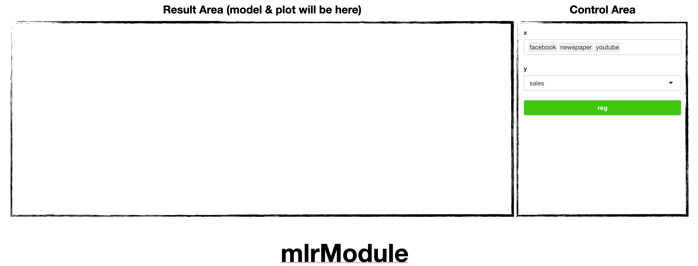
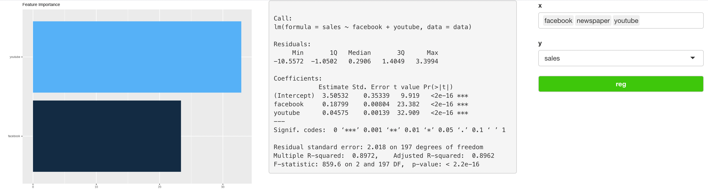

Introduction
soroban’s mlrModule perform Multiple Linear
Regression analysis and shows linear model & variable
importance.
In this article, we’ll use marketing dataset of datarium
This article is based on 0.0.1 Version of soroban
datarium::marketing
Declare module
soroban’s module assumes that used in the Shiny application.
and You can use snippet(type shinyapp) to build very
basic shiny application.
library(shiny)
ui <- fluidPage(
)
server <- function(input, output, session) {
}
shinyApp(ui, server)This application will show nothing.
So let’s add pcaModule in ui.
ui <- fluidPage(
mod_mlrModule_ui(
id = 'module'
)
)also, pcaModule in server.
server <- function(input, output, session) {
mod_mlrModule_server(
id = 'module',
inputData = reactive(datarium::marketing)
)
}So final (which is very basic) code will like this. (Assume data from
AER loaded.)
library(shiny)
ui <- fluidPage(
mod_mlrModule_ui(
id = 'module'
)
)
server <- function(input, output, session) {
mod_mlrModule_server(
id = 'module',
inputData = reactive(datarium::marketing) # remotes::install_github('kassambara/datarium')
)
}
shinyApp(ui, server) # Run applicationYou should notice 2 things.
- both
idin ui and server should be same. -
inputDatain server should be format of reactive
Structure of pcaModule

pcaModule is consisted with Control Area and
Result Area
and below using flow.
- Declare module (we did already)
- select explain, response variables
-
Reg(Regression !)
Usage of mlrModule
Using marketing, we’ll see which factor makes sales.
Select facebook, newspaper, and
youtube as X and sales as
Y

You can see variable importance in left, (which means
Youtube has more effect on sales then
Facebook)
and model in right panel ( \(sales \approx 0.1878 \times facebook + 0.045 \times youtube + 3.505\) )
Note that, mlrModule automatically select model by AIC
(stepwise)
so newspaper was removed in that process (it may have very small effect
to sales)
For any issue or suggestion, please make issue in soroban’s github.